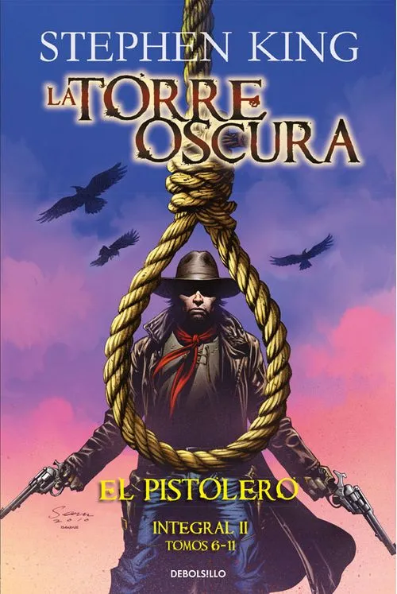
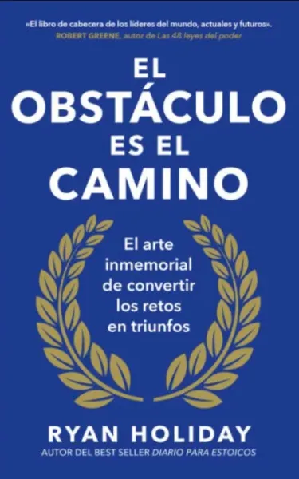
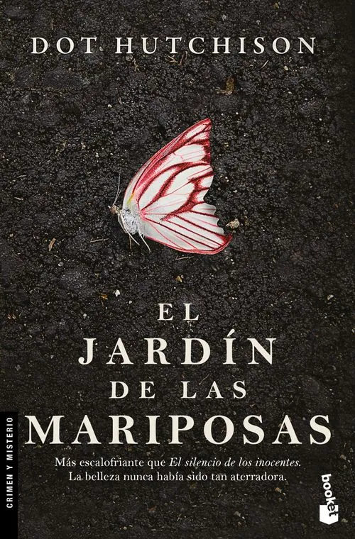
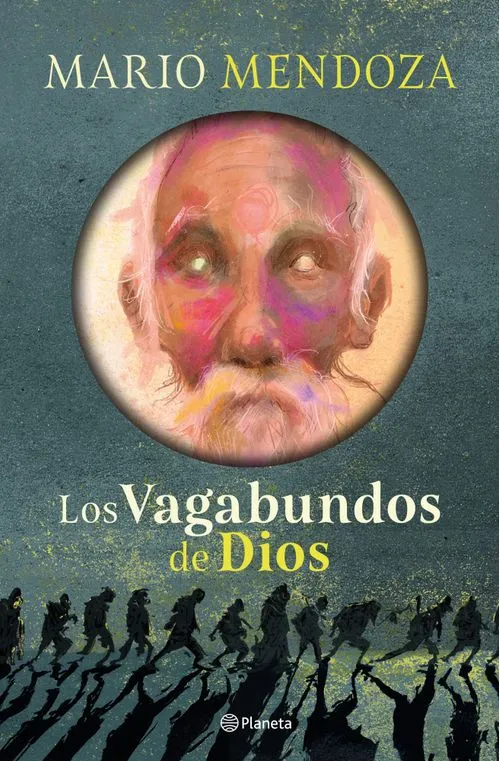

CATEGORIAS
MARIO MENDOZA
Mario Mendoza es un escritor, periodista y profesor colombiano nacido en Bogotá en 1964, reconocido como una de las voces más influyentes de la literatura contemporánea en Colombia y América Latina. Su obra se ha caracterizado por una profunda exploración de la condición humana dentro de contextos urbanos, abordando temáticas como la marginalidad, la violencia, la soledad, la locura y la búsqueda de sentido en medio del caos moderno. A lo largo de su trayectoria, Mendoza ha construido un universo literario sólido y coherente, en el que la ciudad de Bogotá se convierte en un escenario vivo, casi como un personaje más, donde convergen historias de individuos que enfrentan conflictos internos y realidades sociales complejas. Su estilo narrativo combina elementos del realismo con tintes filosóficos y psicológicos, logrando relatos intensos que invitan a la reflexión crítica del lector. Entre sus obras más destacadas se encuentran novelas como Satanás, ganadora del Premio Biblioteca Breve, así como La ciudad de los umbrales, Scorpio City y Buda Blues, textos que han consolidado su reconocimiento a nivel nacional e internacional. Además, ha incursionado en el ensayo y la literatura juvenil, ampliando su alcance a diferentes públicos y generaciones. Más allá de la narrativa, Mario Mendoza ha desarrollado una importante labor académica y periodística, lo que ha influido en la profundidad de sus obras, dotándolas de una mirada crítica sobre la sociedad contemporánea. Su escritura no solo busca contar historias, sino también generar conciencia, cuestionar estructuras y provocar una introspección en el lector. Su legado literario continúa creciendo, posicionándolo como un autor fundamental para comprender las dinámicas sociales, culturales y emocionales del mundo actual.
COLECCIÓN MARIO MENDOZA
Esta colección reúne una cuidadosa selección de obras que representan la esencia del pensamiento y la narrativa de Mario Mendoza. A través de sus libros, el lector tiene la oportunidad de sumergirse en relatos que exploran las múltiples dimensiones del ser humano, desde sus conflictos internos hasta su relación con el entorno social. Cada obra ofrece una experiencia única, en la que se entrelazan el suspenso, la introspección y el análisis crítico de la realidad. Sus historias permiten recorrer distintos escenarios urbanos y psicológicos, mostrando personajes complejos que reflejan las tensiones y contradicciones de la vida moderna. Más que una simple recopilación de textos, esta colección se presenta como una puerta de entrada al universo del autor, invitando al lector a cuestionar, reflexionar y construir su propia visión del mundo a partir de las experiencias narradas. De esta manera, la lectura se convierte en un proceso de enriquecimiento personal, donde cada página aporta una nueva perspectiva sobre la realidad y la naturaleza humana.
Selecciona un libro
Aquí aparecerá la descripción





OTROS AUTORES
La presente colección se enriquece con la inclusión de autores de gran reconocimiento a nivel internacional, cuyas obras han trascendido fronteras y generaciones, consolidándose como referentes dentro de diversos géneros literarios. Entre ellos, Stephen King se posiciona como una de las figuras más influyentes de la literatura contemporánea, especialmente en el ámbito del terror y el suspenso psicológico. Sus historias no solo exploran lo sobrenatural, sino que profundizan en los miedos internos, las emociones humanas y las complejidades de la mente, logrando una conexión intensa con el lector. En este panorama también destaca George R.R. Martin, reconocido por su capacidad para construir universos complejos dentro de la fantasía épica, donde la política, la guerra y las relaciones humanas se entrelazan con gran detalle. De igual manera, J.K. Rowling ha dejado una huella significativa en la literatura juvenil y fantástica, desarrollando una narrativa que combina imaginación, valores y crecimiento personal, atrayendo a lectores de todas las edades. Por su parte, Dan Brown se ha consolidado en el género del thriller histórico y de misterio, integrando elementos de arte, religión y ciencia en tramas dinámicas que invitan al análisis y la interpretación. En contraste, autores como Haruki Murakami ofrecen una propuesta más introspectiva, donde lo cotidiano se mezcla con lo surreal, generando experiencias literarias profundas y abiertas a múltiples significados. Asimismo, Isabel Allende representa una de las voces más importantes de la literatura latinoamericana, destacándose por su estilo narrativo cargado de realismo mágico, memoria histórica y sensibilidad social. Sus obras abordan temas como la identidad, el amor, la pérdida y la resiliencia, consolidando una narrativa rica en emociones y contextos culturales.
Dentro de esta diversidad literaria, también se incluyen autores que han explorado el comportamiento humano desde distintas perspectivas. Max Brooks, por ejemplo, ha desarrollado narrativas centradas en escenarios apocalípticos que permiten reflexionar sobre la organización social y la supervivencia. Joe Dispenza, desde un enfoque más científico y motivacional, aporta contenidos relacionados con la transformación personal, la mente y la conciencia, integrando conocimientos de la neurociencia en sus planteamientos. En el ámbito de la narrativa emocional contemporánea, Banana Yoshimoto ofrece una visión íntima de la vida cotidiana, explorando sentimientos como la soledad, la pérdida y la reconstrucción emocional. Su estilo sencillo pero profundo permite una conexión directa con el lector. Andrea Longarela, por su parte, se enfoca en historias románticas actuales, caracterizadas por su cercanía con el público joven y por abordar las relaciones humanas desde una perspectiva realista y emocional. De igual manera, John Grisham ha logrado posicionarse como uno de los principales exponentes del thriller legal, construyendo relatos que combinan tensión narrativa con cuestionamientos éticos y sociales. Autores como Paulo Coelho también forman parte de este panorama, aportando obras centradas en la reflexión espiritual, el propósito de vida y la búsqueda personal, lo que ha permitido que sus libros alcancen una amplia difusión a nivel global. Finalmente, la colección incorpora una variedad de autores adicionales que complementan la experiencia literaria, tales como Gabriel García Márquez, reconocido por su aporte al realismo mágico; Julio Cortázar, por su innovación narrativa; y Ernest Hemingway, por su estilo directo y profundo. Esta integración de múltiples voces, estilos y contextos permite ofrecer un catálogo equilibrado y enriquecedor, en el que cada lector puede encontrar obras acordes a sus intereses y preferencias.
En conjunto, la diversidad de autores presentes en esta sección no solo amplía el panorama literario, sino que también fortalece el desarrollo del pensamiento crítico y la apreciación cultural. Cada obra representa una oportunidad para explorar nuevas ideas, comprender diferentes realidades y generar un proceso de reflexión personal a través de la lectura. De esta manera, la colección se consolida como un espacio integral que promueve el conocimiento, la imaginación y el crecimiento intelectual, permitiendo al lector transitar por distintos géneros como el terror, la fantasía, el romance, el ensayo, la ciencia ficción y la narrativa contemporánea. Así, más que una simple recopilación de libros, se configura como una experiencia literaria completa, diseñada para enriquecer la visión del mundo y fomentar el hábito de la lectura de manera significativa y constante.